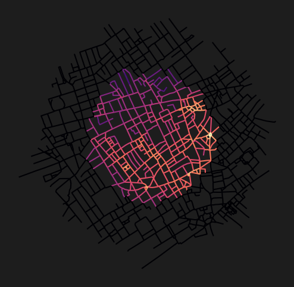
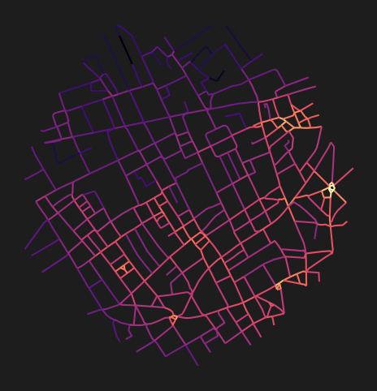

import matplotlib.pyplot as plt
from cityseer.metrics import networks
from cityseer.tools import graphs, io
from shapely import geometrySetting live or non-live nodes
Set a note status to live=True or live=False based on whether it intersect the original boundary.
This is used for demarcating nodes that fall within the original unbuffered boundary when calculating measures. This allows for the original boundary to be delineated from the buffered surrounding extents, which is normally included for purposes of avoiding edge roll-off. The algorithms will continue to consider parts of the network where nodes are not live (therefore preventing edge roll-off), but will not compute metrics for these nodes (reducing unnecessary computation).
When using this approach it is best to work in a projector coordinate reference system. In this example we will cast the buffered point polygon to projected CRS by using the projected=True parameter.
lng, lat = -0.13396079424572427, 51.51371088849723
buffer = 500
poly_utm, epsg_code = io.buffered_point_poly(lng, lat, buffer, projected=True)
poly_utmSince the Polygon is in a projected CRS, the buffering step can proceed with a distance defined in metres. Here the Polygon is buffered by 400m since this is the maximum distance considered for the centrality analysis in the next step.
pol_buff = poly_utm.buffer(400)
pol_buffThe buffer polygon can then be used as an argument for retrieving the OSM network. The poly_crs_code and to_crs_code parameters need to be set so that the function knows which CRS the input geometry is in, and which CRS to convert the network to.
G = io.osm_graph_from_poly(pol_buff, poly_crs_code=epsg_code, to_crs_code=epsg_code)WARNING:cityseer.tools.io:Merging node 12450391665 into 25544116 due to identical x, y coords.
INFO:cityseer.tools.graphs:Generating interpolated edge geometries.
100%|██████████| 9574/9574 [00:00<00:00, 53513.86it/s]
INFO:cityseer.tools.io:Converting networkX graph to CRS code 32630.
INFO:cityseer.tools.io:Processing node x, y coordinates.
100%|██████████| 8905/8905 [00:00<00:00, 1094674.01it/s]
INFO:cityseer.tools.io:Processing edge geom coordinates, if present.
100%|██████████| 9574/9574 [00:00<00:00, 19250.07it/s]
INFO:cityseer.tools.graphs:Removing filler nodes.
100%|██████████| 8905/8905 [00:00<00:00, 24650.31it/s]
INFO:cityseer.tools.util:Creating edges STR tree.
100%|██████████| 5145/5145 [00:00<00:00, 1659721.13it/s]
100%|██████████| 5145/5145 [00:00<00:00, 10442.56it/s]
INFO:cityseer.tools.graphs:Removing filler nodes.
100%|██████████| 4476/4476 [00:00<00:00, 63468.42it/s]
100%|██████████| 3094/3094 [00:00<00:00, 334782.57it/s]
INFO:cityseer.tools.graphs:Removing dangling nodes.
INFO:cityseer.tools.graphs:Removing filler nodes.
100%|██████████| 3871/3871 [00:00<00:00, 1087703.54it/s]
INFO:cityseer.tools.util:Creating edges STR tree.
100%|██████████| 2952/2952 [00:00<00:00, 1751037.39it/s]
INFO:cityseer.tools.graphs:Splitting opposing edges.
100%|██████████| 2348/2348 [00:00<00:00, 308750.85it/s]
INFO:cityseer.tools.graphs:Squashing opposing nodes
INFO:cityseer.tools.graphs:Merging parallel edges within buffer of 25.
100%|██████████| 2952/2952 [00:00<00:00, 177692.10it/s]
INFO:cityseer.tools.util:Creating edges STR tree.
100%|██████████| 2937/2937 [00:00<00:00, 1278666.27it/s]
INFO:cityseer.tools.graphs:Splitting opposing edges.
100%|██████████| 2348/2348 [00:00<00:00, 34263.76it/s]
INFO:cityseer.tools.graphs:Squashing opposing nodes
INFO:cityseer.tools.graphs:Merging parallel edges within buffer of 25.
100%|██████████| 2966/2966 [00:00<00:00, 293375.76it/s]
INFO:cityseer.tools.util:Creating edges STR tree.
100%|██████████| 2961/2961 [00:00<00:00, 1754143.24it/s]
INFO:cityseer.tools.graphs:Splitting opposing edges.
100%|██████████| 2348/2348 [00:00<00:00, 135246.24it/s]
INFO:cityseer.tools.graphs:Squashing opposing nodes
INFO:cityseer.tools.graphs:Merging parallel edges within buffer of 25.
100%|██████████| 2962/2962 [00:00<00:00, 475523.56it/s]
INFO:cityseer.tools.util:Creating edges STR tree.
100%|██████████| 2962/2962 [00:00<00:00, 1277220.98it/s]
INFO:cityseer.tools.graphs:Splitting opposing edges.
100%|██████████| 2348/2348 [00:00<00:00, 88577.52it/s]
INFO:cityseer.tools.graphs:Squashing opposing nodes
INFO:cityseer.tools.graphs:Merging parallel edges within buffer of 25.
100%|██████████| 2963/2963 [00:00<00:00, 516208.63it/s]
INFO:cityseer.tools.util:Creating nodes STR tree
100%|██████████| 2348/2348 [00:00<00:00, 57349.15it/s]
INFO:cityseer.tools.graphs:Consolidating nodes.
100%|██████████| 2348/2348 [00:00<00:00, 313857.66it/s]
INFO:cityseer.tools.graphs:Merging parallel edges within buffer of 25.
100%|██████████| 2963/2963 [00:00<00:00, 476998.65it/s]
INFO:cityseer.tools.graphs:Removing filler nodes.
100%|██████████| 2348/2348 [00:00<00:00, 579171.12it/s]
INFO:cityseer.tools.util:Creating nodes STR tree
100%|██████████| 2326/2326 [00:00<00:00, 55185.40it/s]
INFO:cityseer.tools.graphs:Consolidating nodes.
100%|██████████| 2326/2326 [00:01<00:00, 1468.02it/s]
INFO:cityseer.tools.graphs:Merging parallel edges within buffer of 25.
100%|██████████| 2698/2698 [00:00<00:00, 69898.16it/s]
INFO:cityseer.tools.graphs:Removing filler nodes.
100%|██████████| 2133/2133 [00:00<00:00, 603429.81it/s]
INFO:cityseer.tools.util:Creating nodes STR tree
100%|██████████| 2117/2117 [00:00<00:00, 54698.65it/s]
INFO:cityseer.tools.graphs:Consolidating nodes.
100%|██████████| 2117/2117 [00:00<00:00, 6290.36it/s]
INFO:cityseer.tools.graphs:Merging parallel edges within buffer of 25.
100%|██████████| 2592/2592 [00:00<00:00, 213156.79it/s]
INFO:cityseer.tools.graphs:Removing filler nodes.
100%|██████████| 2088/2088 [00:00<00:00, 862828.25it/s]
INFO:cityseer.tools.util:Creating nodes STR tree
100%|██████████| 2083/2083 [00:00<00:00, 56612.21it/s]
INFO:cityseer.tools.graphs:Consolidating nodes.
100%|██████████| 2083/2083 [00:00<00:00, 4523.22it/s]
INFO:cityseer.tools.graphs:Merging parallel edges within buffer of 25.
100%|██████████| 2536/2536 [00:00<00:00, 305434.46it/s]
INFO:cityseer.tools.graphs:Removing filler nodes.
100%|██████████| 2050/2050 [00:00<00:00, 1089774.80it/s]
INFO:cityseer.tools.util:Creating nodes STR tree
100%|██████████| 2048/2048 [00:00<00:00, 56403.26it/s]
INFO:cityseer.tools.util:Creating edges STR tree.
100%|██████████| 2530/2530 [00:00<00:00, 1688667.91it/s]
INFO:cityseer.tools.graphs:Snapping gapped endings.
100%|██████████| 2048/2048 [00:00<00:00, 18030.25it/s]
INFO:cityseer.tools.util:Creating edges STR tree.
100%|██████████| 2626/2626 [00:00<00:00, 1712679.57it/s]
INFO:cityseer.tools.graphs:Splitting opposing edges.
100%|██████████| 2048/2048 [00:00<00:00, 14949.47it/s]
INFO:cityseer.tools.graphs:Merging parallel edges within buffer of 25.
100%|██████████| 3074/3074 [00:00<00:00, 458525.93it/s]
INFO:cityseer.tools.graphs:Removing dangling nodes.
100%|██████████| 2301/2301 [00:00<00:00, 655377.80it/s]
INFO:cityseer.tools.graphs:Removing filler nodes.
100%|██████████| 1956/1956 [00:00<00:00, 34370.76it/s]
INFO:cityseer.tools.util:Creating edges STR tree.
100%|██████████| 2197/2197 [00:00<00:00, 1675738.48it/s]
INFO:cityseer.tools.graphs:Splitting opposing edges.
100%|██████████| 1424/1424 [00:00<00:00, 11760.50it/s]
INFO:cityseer.tools.graphs:Squashing opposing nodes
INFO:cityseer.tools.graphs:Merging parallel edges within buffer of 25.
100%|██████████| 2213/2213 [00:00<00:00, 190349.13it/s]
INFO:cityseer.tools.util:Creating nodes STR tree
100%|██████████| 1424/1424 [00:00<00:00, 56733.08it/s]
INFO:cityseer.tools.graphs:Consolidating nodes.
100%|██████████| 1424/1424 [00:02<00:00, 633.45it/s]
INFO:cityseer.tools.graphs:Merging parallel edges within buffer of 25.
100%|██████████| 1725/1725 [00:00<00:00, 43771.55it/s]
INFO:cityseer.tools.util:Creating edges STR tree.
100%|██████████| 1629/1629 [00:00<00:00, 1666875.14it/s]
INFO:cityseer.tools.graphs:Splitting opposing edges.
100%|██████████| 1089/1089 [00:00<00:00, 13079.31it/s]
INFO:cityseer.tools.graphs:Squashing opposing nodes
INFO:cityseer.tools.graphs:Merging parallel edges within buffer of 25.
100%|██████████| 1634/1634 [00:00<00:00, 392975.50it/s]
INFO:cityseer.tools.util:Creating nodes STR tree
100%|██████████| 1089/1089 [00:00<00:00, 57539.46it/s]
INFO:cityseer.tools.graphs:Consolidating nodes.
100%|██████████| 1089/1089 [00:01<00:00, 970.97it/s]
INFO:cityseer.tools.graphs:Merging parallel edges within buffer of 25.
100%|██████████| 1418/1418 [00:00<00:00, 75465.65it/s]
INFO:cityseer.tools.graphs:Removing filler nodes.
100%|██████████| 901/901 [00:00<00:00, 160893.56it/s]
INFO:cityseer.tools.graphs:Merging parallel edges within buffer of 50.
100%|██████████| 1346/1346 [00:00<00:00, 112845.21it/s]
INFO:cityseer.tools.graphs:Ironing edges.
100%|██████████| 1336/1336 [00:00<00:00, 21940.19it/s]
INFO:cityseer.tools.graphs:Merging parallel edges within buffer of 1.
100%|██████████| 1332/1332 [00:00<00:00, 399543.23it/s]
INFO:cityseer.tools.graphs:Removing dangling nodes.
100%|██████████| 861/861 [00:00<00:00, 847324.20it/s]
INFO:cityseer.tools.graphs:Removing filler nodes.
100%|██████████| 856/856 [00:00<00:00, 322667.77it/s]Since the network and the source geometry are in the same CRS, it is possible to demarcate each node as either live=True or live=False based on whether it intersects the original geometry.
This can be done by iterating through the nodes and checking if they intersect the original geometry. If they do, the node is set to live=True, otherwise it is set to live=False.
for node_idx, node_data in G.nodes(data=True):
node_pnt = geometry.Point(node_data["x"], node_data["y"])
if node_pnt.intersects(poly_utm):
G.nodes[node_idx]["live"] = True
else:
G.nodes[node_idx]["live"] = FalseMetrics can then be computed based on the target distance without encountering edge roll-off.
G_dual = graphs.nx_to_dual(G)
nodes_gdf, _edges_gdf, network_structure = io.network_structure_from_nx(
G_dual,
)
distances = [400]
nodes_gdf = networks.node_centrality_shortest(
network_structure=network_structure,
nodes_gdf=nodes_gdf,
distances=distances,
)
nodes_gdf.head()INFO:cityseer.tools.graphs:Converting graph to dual.
INFO:cityseer.tools.graphs:Preparing dual nodes
100%|██████████| 1314/1314 [00:00<00:00, 36674.13it/s]
INFO:cityseer.tools.graphs:Preparing dual edges (splitting and welding geoms)
100%|██████████| 1314/1314 [00:01<00:00, 751.64it/s]
INFO:cityseer.tools.io:Preparing node and edge arrays from networkX graph.
100%|██████████| 1314/1314 [00:00<00:00, 12201.22it/s]
100%|██████████| 1314/1314 [00:00<00:00, 4381.52it/s]
INFO:cityseer.metrics.networks:Computing shortest path node centrality.
100%|██████████| 1314/1314 [00:01<00:00, 1310.09it/s]
INFO:cityseer.config:Metrics computed for:
INFO:cityseer.config:Distance: 400m, Beta: 0.01, Walking Time: 5.0 minutes.| ns_node_idx | x | y | live | weight | primal_edge | primal_edge_node_a | primal_edge_node_b | primal_edge_idx | dual_node | cc_beta_400 | cc_cycles_400 | cc_density_400 | cc_farness_400 | cc_harmonic_400 | cc_hillier_400 | cc_betweenness_400 | cc_betweenness_beta_400 | |
|---|---|---|---|---|---|---|---|---|---|---|---|---|---|---|---|---|---|---|
| 25257319_25257320_k0 | 0 | 698204.726812 | 5.710187e+06 | False | 1 | LINESTRING (698235.492 5710213.589, 698232.233... | 25257320 | 25257319 | 0 | POINT (698204.726812 5710187.371082) | 0.0 | 0.0 | 0.0 | 0.0 | 0.0 | NaN | 0.0 | 0.0 |
| 108252_25257054_k0 | 1 | 698153.709285 | 5.710642e+06 | False | 1 | LINESTRING (698138.426 5710664.248, 698144.112... | 108252 | 25257054 | 0 | POINT (698153.709285 5710641.538834) | 0.0 | 0.0 | 0.0 | 0.0 | 0.0 | NaN | 0.0 | 0.0 |
| 108252_452229727_k0 | 2 | 698123.239970 | 5.710685e+06 | False | 1 | LINESTRING (698138.426 5710664.248, 698133.018... | 108252 | 452229727 | 0 | POINT (698123.23997 5710685.118712) | 0.0 | 0.0 | 0.0 | 0.0 | 0.0 | NaN | 0.0 | 0.0 |
| 108252_12391|03078±57552|08253_k0 | 3 | 698120.890901 | 5.710655e+06 | False | 1 | LINESTRING (698103.385 5710645.919, 698131.137... | 108252 | 12391|03078±57552|08253 | 0 | POINT (698120.890901 5710655.116857) | 0.0 | 0.0 | 0.0 | 0.0 | 0.0 | NaN | 0.0 | 0.0 |
| 108252_10825|82720±25257|82720±12373|16592_k0 | 4 | 698183.290484 | 5.710684e+06 | False | 1 | LINESTRING (698228.148 5710703.651, 698222.24 ... | 108252 | 10825|82720±25257|82720±12373|16592 | 0 | POINT (698183.290484 5710683.927691) | 0.0 | 0.0 | 0.0 | 0.0 | 0.0 | NaN | 0.0 | 0.0 |
Measures will only have been computed for live nodes.
fig, ax = plt.subplots(1, 1, figsize=(8, 6), facecolor="#1d1d1d")
nodes_gdf.plot(
column="cc_harmonic_400",
cmap="magma",
legend=False,
ax=ax,
)
ax.axis(False)(np.float64(697663.3353532758),
np.float64(699986.2102806268),
np.float64(5709670.722888798),
np.float64(5711930.195587498))
To print or save only live nodes, filter the data frame accordingly.
fig, ax = plt.subplots(1, 1, figsize=(8, 6), facecolor="#1d1d1d")
nodes_filtered = nodes_gdf[nodes_gdf.live]
nodes_filtered.plot(
column="cc_harmonic_400",
cmap="magma",
legend=False,
ax=ax,
)
ax.axis(False)(np.float64(698266.6364452019),
np.float64(699469.3803111856),
np.float64(5710222.983618274),
np.float64(5711471.82779159))